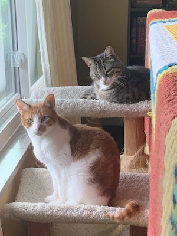

Fun Facts About Me
- I have two cats named Nero and Ziggy.
- I am a huge Pokémon fan.
- I used to be a competitive dancer.
- I listen to a new music album pretty much every day.
- The only country I've been to besides the USA is Canada.
- I have one older brother.
- Every time I tell someone I'm 25 years old, they tell me that they thought I was way younger.
- I know a concerning amount of lore about the show Dance Moms.
- My favorite color is orange.
- I went to a performing arts middle and high school.
